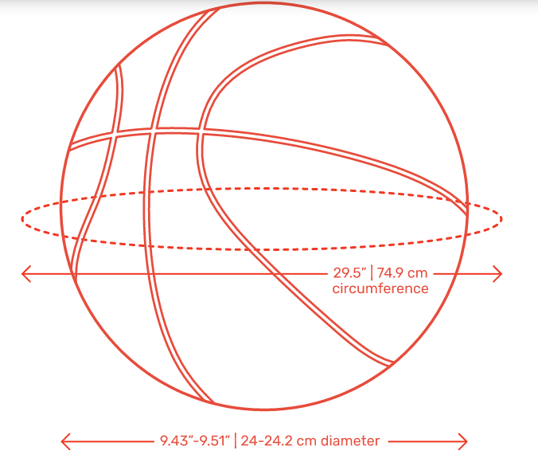
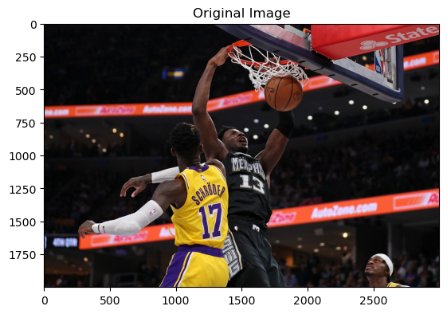
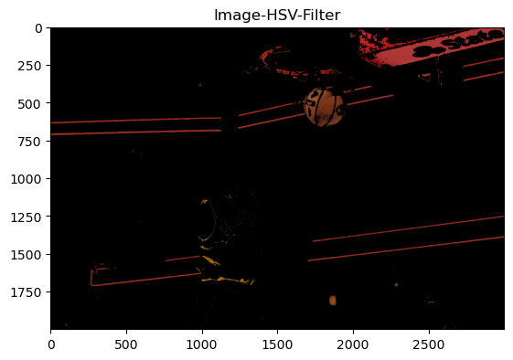
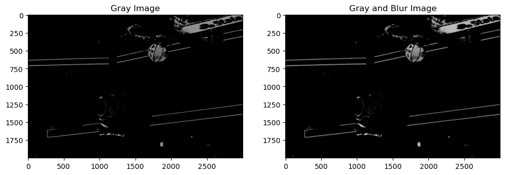
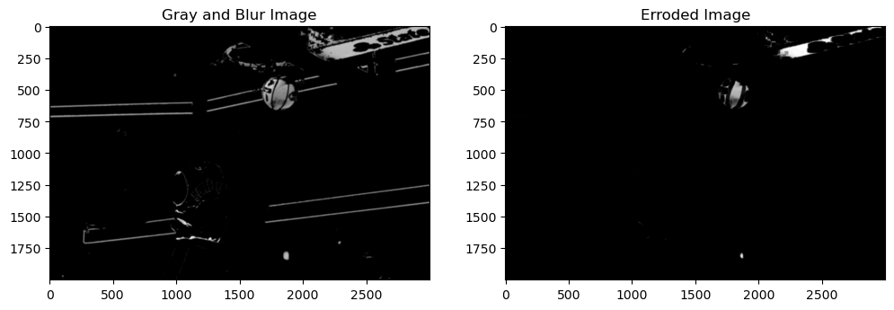
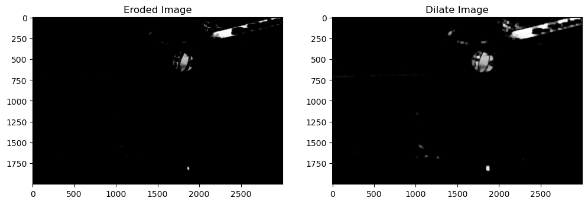
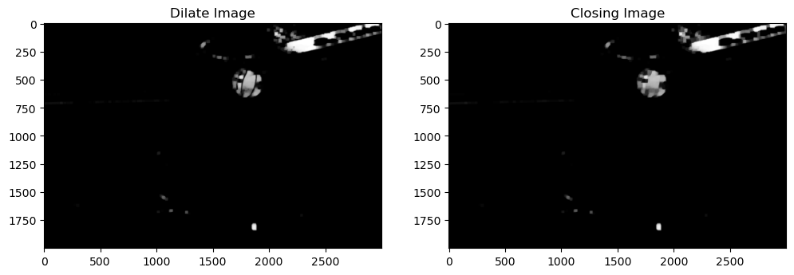
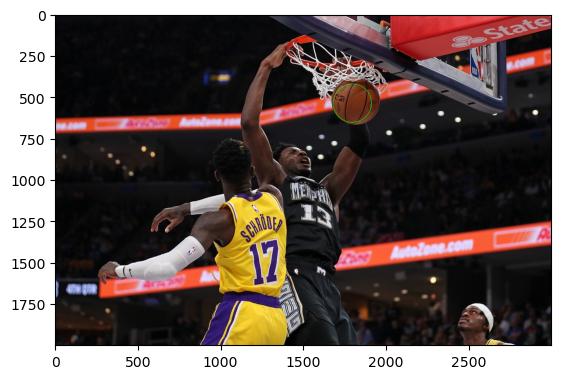
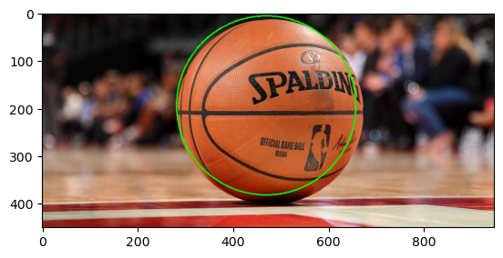
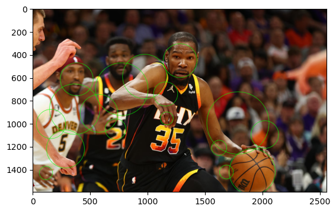

Object Detection, Tracking of Basketballs
Failure Experience:
- cv2.HoughCircles only find object with ball shape, but there are many similar objects in the real world can be classified as ball object
A. Basket ball features
A1. General feautures
- shape: ball / circle
- color: organge
A2. Minor features
- line: black_line
size in real world: 12-12.1 cm radius

B. Solutions
- HSV Color Filter
- Gray Image and Blur
- Erosion, Dialate and closing: Reference link
- HoughCircles
C. Diagram
graph TD
A[Input Image] --> B[HSV Color Filter]
B --> C[Gray Image and Blur]
C --> D[Erosion, Dialate and closing]
D --> E[HoughCircles]
E --> F[Output]
C. Implementation
Import required libraries
import cv2
import numpy as np
import matplotlib.pyplot as plt
C1. Read Original Image
im = cv2.imread("data\\png_ball1.png")
im_original = cv2.cvtColor(im, cv2.COLOR_BGR2RGB)
plt.title("Original Image")
plt.imshow(im_original)
plt.show()

C2. HSV Color Filter
im_hsv = cv2.cvtColor(im, cv2.COLOR_BGR2HSV)
# take only the orange, highly saturated, and bright parts
# im_hsv = cv2.inRange(im_hsv, (7, 180, 180), (11, 255, 255))
im_hsv = cv2.inRange(im_hsv, (0, 150, 100), (20, 255, 200))
# To show the detected orange parts:
im_orange = im.copy()
im_orange[im_hsv == 0] = 0
plt.title("Image-HSV-Filter")
plt.imshow(cv2.cvtColor(im_orange, cv2.COLOR_BGR2RGB))
plt.plot()

C3. Gray Image and Gaussian Blur
im_gray = cv2.cvtColor(im_orange, cv2.COLOR_BGR2GRAY)
ksize = (10, 10)
im_gray_blur = cv2.blur(im_gray, ksize)
plt.figure(figsize=(12, 6))
plt.subplot(121)
plt.title("Gray Image")
plt.imshow(im_gray, cmap="gray")
plt.subplot(122)
plt.title("Gray and Blur Image")
plt.imshow(im_gray_blur, cmap="gray")
plt.show()

C4. Erosion, Dialate and closing
Erosion:
kernel = np.ones((21, 21), np.uint8)
erosion = cv2.erode(im_gray_blur, kernel, iterations=1)
plt.figure(figsize=(12, 6))
plt.subplot(121)
plt.title("Gray and Blur Image")
plt.imshow(im_gray_blur, cmap="gray")
plt.subplot(122)
plt.title("Erroded Image")
plt.imshow(erosion, cmap="gray")
plt.show()

Dialate:
kernel = np.ones((11, 11), np.uint8)
dilate = cv2.dilate(erosion, kernel, iterations=2)
plt.figure(figsize=(12, 6))
plt.subplot(121)
plt.title("Eroded Image")
plt.imshow(erosion, cmap="gray")
plt.subplot(122)
plt.title("Dilate Image")
plt.imshow(dilate, cmap="gray")
plt.show()

Closing:
kernel = np.ones((21, 21), np.uint8)
closing = cv2.morphologyEx(dilate, cv2.MORPH_CLOSE, kernel)
plt.figure(figsize=(12, 6))
plt.subplot(121)
plt.title("Dilate Image")
plt.imshow(dilate, cmap="gray")
plt.subplot(122)
plt.title("Closing Image")
plt.imshow(closing, cmap="gray")
plt.show()

C5. Detection: HoughCircles
im_copy = im.copy()
circles = cv2.HoughCircles(closing, cv2.HOUGH_GRADIENT, 1, 50,
param1=50, param2=30, minRadius=10, maxRadius=300)
if circles is not None:
circles = np.round(circles[0, :]).astype("int")
for (x, y, r) in circles:
cv2.circle(im_copy, (x, y), r, (0, 255, 0), 2)
# Display the processed frame
# cv2.imshow('Ball Detection', img)
plt.imshow(cv2.cvtColor(im_copy, cv2.COLOR_BGR2RGB))

D. Testing and Evaluation
D1. Detect a ball in a image

D2. Detect a ball in a complex image
